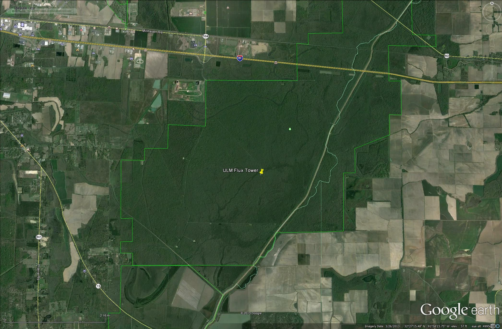

Carbon Tower
Background
Global climate change continues to be an ever-present issue affecting multiple facets of nature. The monitoring of gases such as CO2 and other greenhouse gases has become crucial in understanding the driving forces behind climate change. It is a generally-accepted fact that anthropogenic emission of CO2 is affecting the carbon cycle, but other processes also affect this cycle in both beneficial and detrimental capacities. Photosynthesis and respiration by plants play a pivotal role in the carbon cycle and have to potential to both remove and emit greenhouse gas such as CO2. Monitoring the gas exchange between vegetation and the atmosphere from multiple locations globally can allow for more reliable climate change forecasts to be formulated and implemented. The Eddy Covariance method can be implemented for monitoring gas exchange of a vegetated area and the atmosphere. This method requires the use of sensors that are able to measure the flux of gasses within the atmosphere and determines the exchange rates and amounts of gasses over natural ecosystems.
Louisiana is the 33rd state to implement a tower to monitor gas exchange and is the very first tower to be built in Louisiana for this purpose. The data collected from this tower will become part of a national database ran by the AmeriFlux network. The AmeriFlux network gathers all appropriate and acceptable data from towers across North and South America for interpretation and application into climate models. The data gathered from the ULM flux tower will not only put ULM on a national and even global map, but the entire state of Louisiana as well. This type of research is usually undertaken at the Ph.D. level in universities such as Duke, UC Berkeley, and Harvard. The fact that ULM has joined in this type of research in the ranks of these university attests to the potential housed in this state and university.
Site Description
ULM's flux tower is located in the heart of the Russell Sage Wildlife Management Area. Surrounded by bottomland hardwood forest tress that are very well-established in their growth, the sensors on the tower obtain accurate readings of the area. The clay soil at the site is also representative of Russell Sage's bottomland hardwood forest location and the site floods with a few feet of water during the winter season.
Below is an image of the aerial view of the site:

Tower Construction
In July 2013, a 120 foot tower was constructed in the Russell Sage Wildlife Management Area by Bleu Skies Tower Services, LLC. Thereafter, it was outfitted with sensors capable of monitoring carbon flux of an area. Multiple sensors are positioned on and around the tower to allow for continuous monitoring of variables such as the flux of carbon, solar radiation, temperature, rainfall, and soil moisture. A table of the sensors and their use as well as a image of the tower with positions can be found below.
Below is an image of the Tower with sensor positions:

Tower Instruments
| Sensor | Description | Measurement |
|---|---|---|
| IRGASON | CO2 and H20 Open-Path Gas Analyser with Integrated 3D Sonic Anemometer | Absolute densities of CO2 and H20 and multiple wind components |
| EC100 | Electronics platform | Analyses of IRGASON data |
| NR-Lite 2 | Net Radiometer | Incoming and outgoing radiation of both short and long wave radiation |
| PQS1 | Quantum sensor | Photosynthetically Active Radiation (PAR) |
| HC2S3 | Relative humidity and temperature probe | Relative humidity and temperature |
| WXT520 | All-in-one weather transmitter | Wind speed, wind direction, precipitation, barometric pressure, temperature and relative humidity |
| TE525 | Tipping bucket rain gauge | Total rainfall |
| LWS | Leaf Wetness Sensor | Presence and amount of water |
| HFP01SC | Self-Calibrating Soil Heat Flux Sensor | Heat flux in the soil |
| CS616 | Water Content Reflecto-meter | Volumetric water content of soil |
| TCAV | Averaging Soil Thermocouple Probe | Average temperature of the soil |
With confirming trends in global warming, it is crucial to closely monitor the cycle of major greenhouse gases (GHG) in the atmosphere. In addition to several forms of anthropomorphic generation of CO2, the primary GHG, several other biogeochemical processes are heavily involved in the cycle of carbon dioxide in the terrestrial ecosystems of this planet. Such processes include photosynthesis (1, 2), respiration by plants (3), microbial respiration (4), leaching losses (5), erosion (6), etc. Many of these natural processes have been altered over the several centuries with human appropriation and modification of these natural processes, resulting in imbalance of the net carbon fluxes within ecosystems (7). However, recent research has revealed that studying inter-annual dynamics of atmospheric-terrestrial CO2 exchange can shed light on the net carbon offset in a relatively large area (7). Therefore, more carbon flux measurement sites are being established covering major types of vegetation so that we have a better understanding of carbon exchange within each of these vegetation types. Further, data from these individual sites along with other monitoring sites across the globe (CarboEurope, CarboAfrica, ChinaFlux, JapanFlux, ThaiFlux, AsiaFlux, OzFlux, etc.), will help us make climate change forecasts more reliable and formulate management recommendations for land managers to efficiently manage forested ecosystems and perhaps provide policy makers with evidence to amend or redefine certain existing environmental policies.
With growing awareness about changing climate among our students, we strive to improve the perception of the change and its impact on the planet as a whole, by incorporating examples from global studies on climate change in both our undergraduate and graduate courses at ULM. Classroom discussions about climate change become more relevant and meaningful when discussed in light of several interconnected discipline such as environmental, atmospheric and ecological sciences. ULM fosters full support of undergraduate learning and research opportunities. While trying to improve the field and laboratory experiences that expose students to the understanding of climate change, it would be an important step forward to introduce our students to the role of gaseous exchange, primarily CO2, between terrestrial (forested) and atmospheric systems. Ecosystem CO2 exchange is comprised of fluxes associated with assimilatory and respiratory processes. Timing and amplitude of these components determine seasonal patterns of net CO2 flux (8). Major factors affecting the seasonal course and amount of CO2 exchange depends on seasonal differences in leaf-area index, physiological capacity, meteorological conditions and the length of the growing season of the forest vegetation (9).
Setting up a CO2 flux monitoring system in this part of the state and will broaden the horizons of the students not only at ULM but also in the region, as facilities for carbon monitoring in accordance with the AmeriFlux do not exist in the state of Louisiana or in the broader region (including Arkansas and Mississippi, see Figure 1). AmeriFlux is a scientific organizational network that provides continuous observations of ecosystem level exchanges of CO2, water, energy and momentum spanning diurnal, synoptic, seasonal, and inter-annual time scales and currently composed of sites from North America, Central America, and South America. By contributing data collected at our site to Ameriflux, we will be contributing not only to the understanding and implications of the carbon fluxes at the local and regional levels, but also to the national and global metadata analyses.
Bottomland hardwood forests (BHF, Rarity Rank: S4/G4G5) ecosystems in the South-Eastern US have been called as "ecosystem in crisis" (10). One of the most important factors that determines the structure and functioning of these BHFs is the floodplain hydrology (11). Flood pulses are characterized by the wet and dry cycles and are responsible for maintaining proper ecosystem functions including maintenance of water quality, productive habitat for a variety of fish and wildlife species, and regulation of flooding and stream recharge. The periodicity and intensity of flooding closely dictates the vegetation type, with several species highly adapted to fluctuations water levels and highly anoxic conditions in the bottomlands. Further, anoxic conditions in these BHFs are one of the most important factors in the evolution of vegetation as these species must conduct various life processes to thrive under such conditions. However, with water-control structures in most bayous and rivers, the hydrological characteristics have been heavily disturbed and records indicate that about 80% of the BHFs in the southern US have been lost, from the mid-1950's to the mid-1970's. Today, Louisiana has the greatest coverage of remaining BHF in the region (12). While we universally accept BHF as a novel ecosystem, there is paucity of data on the net ecosystem CO2 exchange (NEE) in this ecosystem. It is an important step to quantify the net carbon storage by forests to validate estimates of carbon sequestration and in assessing the possible role of ecosystems in offsetting fossil fuel emissions (13). Therefore, we propose setting up a continuous CO2 flux monitoring system that will quantify the exchange of carbon and energy of the ecosystem, measure key meteorological variables and supplementary data describing location, vegetation and climate of the site. This will be an addition to the national and international database on Carbon flux, and help us understand the role of BHF in the present climate change scenario.